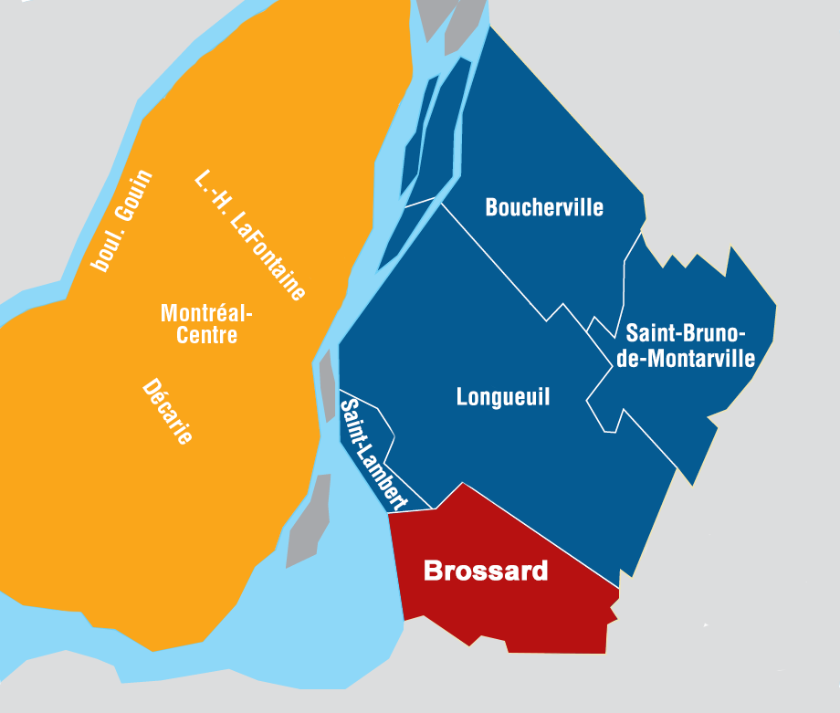

~
Brossard est une ville d’environ 89 000 habitants, fondée en 1958, et située en banlieue à la rive Sud de Montréal, à côté de l’agglomération de Longueuil, dans la région administrative de la Montérégie.
 Carte de la région de Montréal~
Brossard se démarque par de multiples facteurs responsables du charme et de l’attrait de la ville, tels un réseau routier développé permettant de rejoindre promptement Montréal, un vaste éventail de loisirs et d’activités offerts, une offre abondante de services et commerces de tout genre, un milieu naturel riche et protégé, et bien plus encore.
Brossard est une ville récente et prometteuse. Son rapide développement fait d’elle une ville de plus en plus grandiose. Ce développement est tant commercial et industriel (bureaux) que résidentiel. La valeur des propriétés est en continuelle croissance (+45k) car tout public est attiré par la ville, tant les jeunes que les personnes âgées. Les uns préféreront la proximité des services; les autres, la sérénité et la verdure. (600 hectares de terre)